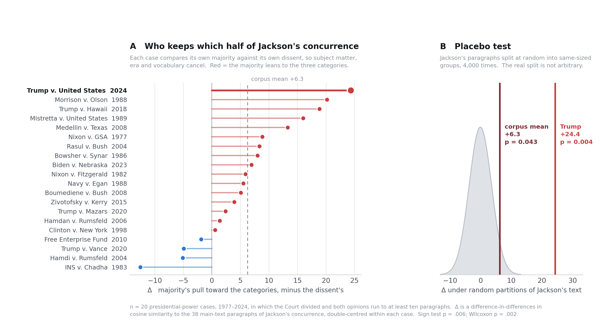
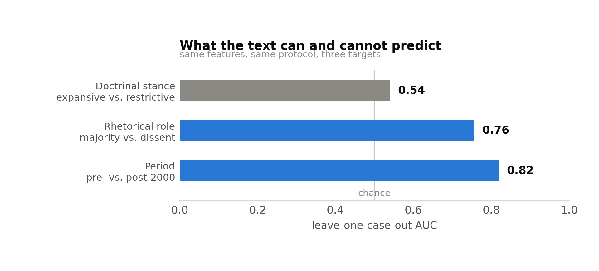

National security law · Presidential power, 1952–2024
Jackson's concurrence left two things: a scheme for classifying presidential power, and a warning about concentrating it. Across twenty divided cases, majorities take the scheme and dissents take the warning — and Trump v. United States is the sharpest split in seventy years.
Jackson's concurrence is cited as a single authority, but it contains two separable resources. At 343 U.S. 635–638 it supplies the three categories — power at its maximum, the zone of twilight, the lowest ebb. At 653–655 it supplies something else entirely: a warning that executive power "has the advantage of concentration in a single head," and that the Court's duty is to be "last, not first, to give them up."
Those two resources are not inherited equally. Within each of twenty divided cases, the majority pulls toward the categories and the dissent pulls toward the warning. The effect appears in 16 of 20 cases and averages +6.3 on a scale where the placebo standard deviation is 3.7.

At Δ = +24.4, Trump ranks first of twenty, nearly four times the corpus mean and 1.98 standard deviations above it. Against the placebo null it sits at p = .004. Its majority engages Jackson's classificatory apparatus more heavily, relative to its dissenters, than any other case in seven decades of presidential-power litigation.
The pattern is not confined to one doctrinal area, which matters for a national security argument — it would be easy to dismiss as an artifact of the detention cases. It is not:
| Domain | Mean Δ | Cases | Examples |
|---|---|---|---|
| War powers, detention, foreign affairs | +6.4 | 8 | Hamdi, Hamdan, Boumediene, Zivotofsky |
| Internal structure, removal, delegation | +5.3 | 7 | Morrison, Chadha, Free Enterprise Fund |
| The President personally | +7.3 | 5 | Nixon v. Fitzgerald, Vance, Mazars |
The obvious approach — score every opinion on an "executive power" scale and watch it move over time — does not work, and the reason it fails is what forces the design.
Jackson's zone paragraphs are about the President's relationship with Congress. His warning paragraphs are about concentrated power and free government. So a detention case resembles the warning register and an allocation-of-authority case resembles the categories for reasons that have nothing to do with doctrinal choice. Comparing Medellín to Hamdi measures subject matter, not jurisprudence.
Majority and dissent in the same case share the facts, the statute, the era, the question presented, and the vocabulary. Differencing inside the case removes all of it.
Sc[o,j] = μc + ρc,o + γc,j + Rc[o,j](1)
Fc(o) = meanj∈ZONES Rc[o,j] − meanj∈WARNING Rc[o,j](2)
Δc = Fc(majority) − Fc(dissent)(3)
Sc[o,j] is the mean cosine similarity between the paragraphs of opinion o and paragraph j of Jackson's main text. ρ absorbs how Youngstown-flavoured an opinion is overall; γ absorbs hub paragraphs of Jackson's that sit close to everything. The interaction R is the double-centred residual — selective engagement — and sums to zero along both margins, so no opinion can inflate it by citing Youngstown more often. Δ is therefore a contrast of contrasts, with case-level effects cancelling by construction.
| Challenge | Result |
|---|---|
| Placebo partition. Maybe majorities apply tests and dissents warn, so any doctrinal/rhetorical split would do this. 4,000 random splits of Jackson's paragraphs into groups of the same sizes. | null −0.1 ± 3.7 corpus p = .043 Trump p = .004 |
| Role permutation. Shuffle which opinions count as majority and dissent, preserving lengths. | null −0.0 ± 2.7 p = .008 |
| Quotation. Both sides quote Youngstown; delete every quoted span and re-embed. | +7.0 (from +6.3) Trump +28.3 |
| Section boundaries. Drop each paragraph of each section in turn. | +4.0 to +7.8 all positive |
| Length threshold. Minimum opinion length from 5 to 30 paragraphs. | +6.1 to +6.3 p ≤ .005 throughout |
The placebo is the one that matters. Had a random split of Jackson's text produced the same gap, the result would have been about the genre of majorities and dissents rather than about Youngstown. It does not.
The majority builds its zone of absolute immunity on a phrase taken from Jackson: where the President's authority is "conclusive and preclusive," Congress may not regulate and courts may not examine. Roberts cites it to 343 U.S. at 638.
Page 638 sits inside Jackson's third category — the lowest ebb. The phrase does not appear where he describes power at its maximum. It appears where he is most sceptical, and it is the object of a warning:
3. When the President takes measures incompatible with the expressed or implied will of Congress, his power is at its lowest ebb… Courts can sustain exclusive presidential control in such a case only by disabling the Congress from acting upon the subject. Presidential claim to a power at once so conclusive and preclusive must be scrutinized with caution, for what is at stake is the equilibrium established by our constitutional system. Youngstown Sheet & Tube Co. v. Sawyer, 343 U.S. 579, 637–638 (1952) (Jackson, J., concurring)
In Jackson's sentence the phrase describes a claim to be distrusted. In the majority's usage it becomes the name of a category attracting the strongest protection the opinion affords. The grammar moves from predicate to label; the caution does not travel with it.
State this narrowly. It is not a misquotation. Roberts cites the page accurately and elsewhere cites the first and second categories to 343 U.S. at 635, 637. The claim worth making is smaller and harder to answer: a phrase Jackson wrote to mark what courts should distrust now names the domain courts may not reach — and the measurement in Figure 1 shows the surrounding warning is exactly the material this majority engages least.
A semantic "constraint ↔ autonomy" axis. Built from anchor phrases, it placed Jackson's lowest ebb further toward autonomy than his maximum power, and put Youngstown itself on the autonomy side. Its constraint pole filled with statutory boilerplate; its autonomy pole included Sotomayor's dissent in Trump v. Hawaii. It correlated +0.48 with nothing more than the density of executive-power vocabulary. Rebuilding the anchors as minimal pairs cut that to +0.37 and still ordered the zones backwards.
A stance classifier. Trained on paragraphs from 25 pre-2024 cases labelled expansive or restrictive, evaluated leave-one-case-out: AUC 0.540. The same features and protocol reach 0.756 for majority-vs-dissent and 0.820 for period. The pipeline works; doctrinal commitment is what fails to transfer.
A within-case fixed-effects deference direction. The natural repair — estimate a common direction δ from within-case contrasts — returned AUC 0.485, below chance, against a permutation null of 0.499 ± 0.029 (p = .62). Splitting δ by doctrinal domain did not help; the three domain directions were mutually near-orthogonal, which in 384 dimensions is simply what random vectors look like.

This is why the paper measures engagement rather than endorsement. Embedding similarity reliably indicates which passages an opinion works with; it carries no information about whether the opinion agrees. The design uses only the former, and the placebo and permutation tests police the difference.
One more null worth a sentence. Δ does not trend over time (r = +0.10, p = .31). The divided inheritance is a standing feature of the case law from 1977 onward, not a recent drift. Trump is the extreme instance of an old pattern rather than the endpoint of a slide — a more defensible and more interesting claim.
Twenty-seven presidential-power decisions, 1952–2024. Pre-2011 opinions from the Caselaw Access Project, which separates concurrences and dissents with author attribution; 2014 onward from the Court's own slip opinions, segmented by recovering paragraph breaks from PDF layout — the Court indents the first line of each paragraph and nothing else in the body is indented. Footnotes are separated by font size in the PDF path but not in the CAP path, so the analysis set is body paragraphs of at least 25 words.
A fix worth knowing about. The official preliminary-print PDFs for Trump, Collins and Biden v. Nebraska have broken font encoding that silently drops the fi ligature: "official" extracts as "offcial" 336 times in Trump alone — the central term of the case. The slip-opinion PDFs are clean and were used instead.
Sources: Caselaw Access Project (static.case.law) and supremecourt.gov. Embeddings: BAAI/bge-small-en-v1.5 via onnxruntime, CLS pooling, L2-normalised. Inference by permutation and bootstrap throughout; no asymptotic standard errors are claimed.